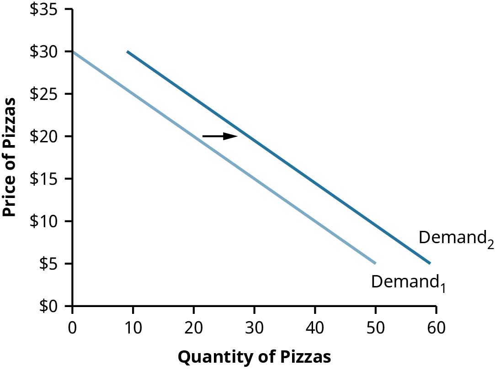
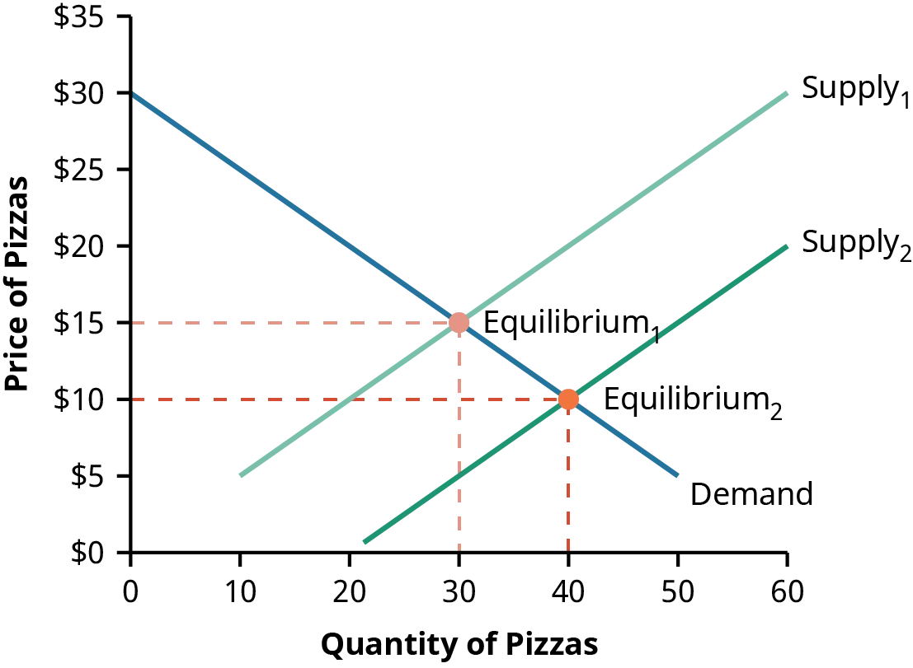
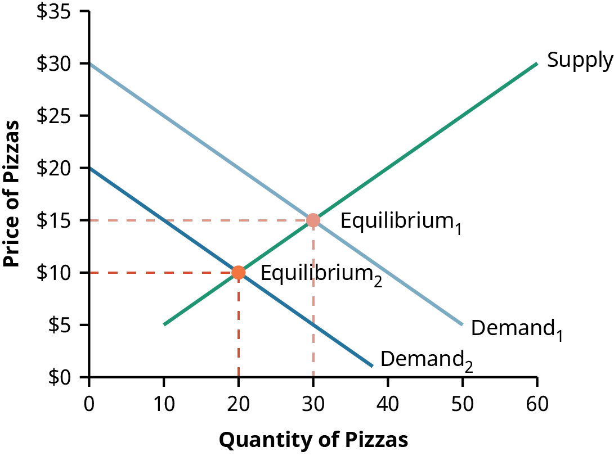

2 Economic Foundations: Money and Rates
Study Materials
- Dahlquist, J. R., &; Knight, R. (2022). Principles of finance. OpenStax, Rice University. https://openstax.org/details/books/principles-finance
- Chapter 3 - Economic Foundations: Money and Rates
Learning Outcomes:
- Understand and analyze the core concepts of Microeconomics, including the theories of Demand, Supply, and Equilibrium Price.
- Grasp key Macroeconomic indicators such as Inflation, Unemployment, and Gross Domestic Product and analyze their impact on an economy.
- Identify, interpret, and evaluate the phases of Business Cycles and its influence on Economic Activity.
- Evaluate the role and impact of Interest Rates on the economy and individual decision-making.
- Understand the factors determining Foreign Exchange Rates and its effects on global trade and domestic economy.
2.1 Microeconomics
- Microeconomics studies the decisions and actions of individual agents like businesses and consumers in an economy.
- It aids financial managers in understanding the market, pricing, and resource availability.
2.1.1 Demand
- Demand refers to the quantity of a good or service consumers are willing and able to buy at different prices, assuming all other factors remain constant.
- The demand for a product, such as pizza, can be illustrated through a demand curve that is typically downward sloping, representing the law of demand.
- The law of demand, an inverse relationship between price and quantity sold, is due to the diminishing satisfaction from consuming additional units and consumers’ limited ability to pay.
- The demand curve assumes that only the price of the product changes, with all other factors constant.
| Price ($) | Quantity |
|---|---|
| 30 | 0 |
| 25 | 10 |
| 20 | 20 |
| 15 | 30 |
| 10 | 40 |
| 5 | 50 |

- However, changes in other economic factors like consumer income, population size, tastes and preferences, and prices of other goods can cause the demand curve to shift.
- An increase in demand, caused by factors like a rise in the price of substitute goods, shifts the demand curve to the right, while a decrease in demand, perhaps due to negative publicity, shifts it to the left.
| Price ($) | Quantity |
|---|---|
| 30 | 9 |
| 25 | 19 |
| 20 | 29 |
| 15 | 39 |
| 10 | 49 |
| 5 | 59 |

2.1.2 Supply
- Supply refers to the quantity of a good or service that businesses are ready to sell at various prices, given other factors remain constant.
- Higher prices often incentivize producers to offer more of their products for sale, indicating a positive correlation between price and quantity supplied.
- The supply curve visually represents this relationship, assuming all other relevant economic factors are unchanged.
- If other factors like cost of production or salaries change, the supply curve will shift.
- A shift to the right on the supply curve suggests an increase in supply (more quantity at the same price), while a shift to the left indicates a decrease in supply.
| Price ($) | Quantity |
|---|---|
| 30 | 60 |
| 25 | 50 |
| 20 | 40 |
| 15 | 30 |
| 10 | 20 |
| 5 | 10 |

2.1.3 Equilibrium Price
- Market equilibrium is determined by the interaction of demand (buyers) and supply (sellers), represented by the point of intersection of demand and supply curves.
- At equilibrium, quantity demanded equals quantity supplied, with no shortage or surplus of the product.
- In a competitive market, a price higher than the equilibrium price results in surplus supply, causing price reduction and lower production.
- Conversely, a price lower than the equilibrium results in shortage, driving prices up towards the equilibrium.
- Market forces pull prices to equilibrium, and they remain there unless demand or supply changes.

- An increase in supply (outward shift of supply curve to the right) leads to a decrease in equilibrium price.
- However, movement along the demand curve due to changes in equilibrium price is an increase in quantity demanded, not an increase in demand.

- A decrease in demand (inward shift of demand curve to the left) also results in a drop in equilibrium price.
- Producers move along the supply curve producing fewer products when the price drops, called a decrease in quantity supplied.

2.2 Macroeconomics
- Macroeconomics looks at the economy as a whole, focusing on broad issues such as inflation, unemployment, and growth of production.
2.2.1 Inflation
- Inflation refers to a general increase in price levels over time. It causes the purchasing power of a currency to fall, meaning a dollar can’t buy as much as it used to.
- Economists measure inflation by considering the price of a basket of goods rather than a single item.
- The U.S. Bureau of Labor Statistics measures inflation monthly, with the Consumer Price Index (CPI) being the most commonly cited measure.
- The CPI is based on the cost of buying a fixed basket of goods and services that a typical urban family might purchase.
- Core inflation index is calculated by excluding volatile economic variables like energy and food prices.
- Producer Price Index (PPI) measures prices that producers pay for supplies and raw materials, indicating potential future increases in CPI.
- Bureau of Economic Analysis (BEA) also calculates a measure of inflation called the GDP deflator, which uses prices from a base year to calculate what the GDP would have been if prices were identical to those in the base year.

2.2.2 Unemployment
- Unemployment refers to people who are not working but are actively seeking work and able to take a job.
- The unemployment rate is the percentage of the labor force that is unemployed, calculated as:
\[ \text{Labor Force} = \text{Number Employed} + \text{Number Unemployed} \]
\[ \text{Unemployment Rate} = \frac{\text{Number Unemployed}}{\text{Labor Force}} \]
- Not everyone without a job is counted as unemployed. For instance, retired individuals or stay-at-home parents not seeking employment are not included in the labor force.
- The Bureau of Labor Statistics (BLS) reports the unemployment rate each month, using data from interviews conducted by the Census Bureau.
- To compare unemployment rates around the world, visit the https://openstax.org/r/data-world-bank.

2.2.3 Gross Domestic Product
- Gross domestic product (GDP) represents the total dollar value of all final goods and services produced in a country within a year.
- GDP can be calculated by adding all items purchased in the economy, divided into four categories: consumption spending, investment, government spending, and net exports.
- Consumption spending refers to household purchases, making up approximately two-thirds of US GDP.
- Investment spending pertains to business purchases of new capital goods, accounting for 15%-18% of US GDP.
- Government spending includes federal, state, and local government purchases, making up nearly 20% of US GDP.
- Net exports account for the value of goods produced in the US and sold abroad, minus the value of goods produced abroad and purchased in the US.
- Nominal GDP, the market value of all goods and services produced, can increase due to an increase in production or price rise (inflation).
- Real GDP, calculated by adjusting nominal GDP for inflation, only increases if more goods and services are being produced. This gives a clearer picture of actual production growth.

2.3 Business Cycles and Economic Activity

- The US economy’s growth over time has not been constant; it has periods of faster growth and periods of negative growth, known as the business cycle.

- The business cycle consists of alternating periods of economic expansion and contraction.
- During the expansion phase, GDP rises, employment expands, and unemployment falls. Other measures like new business starts and new home construction may increase.
- Over time, rapid expansion slows, transitioning the economy into the contraction phase. This point is known as the peak of the business cycle.
- Contraction is often associated with increasing unemployment and slowing GDP. The point at which contraction ends and expansion begins is called the trough.
- The length of a business cycle is measured from one trough to the next.
- A recession, often synonymous with the contraction phase, used to be defined as two consecutive quarters of declining GDP.

- Today, the National Bureau of Economic Research (NBER), which officially declares recessions in the US, uses a broader definition. A significant decline in economic activity spread across the economy and lasting for a few months can be declared a recession, considering real income, employment, industrial production, wholesale and retail sales in addition to real GDP.
2.4 Interest Rates
- The market for loanable funds is driven by the rental price of money or the interest rate.
- Suppliers of funds (lenders) are those with a budget surplus, while demanders of funds (borrowers) are those with a budget deficit.
- In this market, the upward-sloping supply curve represents lenders, who are encouraged to supply more funds with a higher interest rate, and the downward-sloping demand curve represents borrowers, who demand fewer funds as interest rates rise.
- Equilibrium in this market occurs where the supply and demand curves intersect, setting an interest rate that balances the quantity supplied and demanded of loanable funds.

- Nominal interest rate is the quoted rate, and real interest rate adjusts this for inflation. It is calculated as
\[ \text{Real Interest Rate} = \text{Nominal Interest Rate} - \text{Inflation Rate} \]
- Real interest rate, not nominal, determines the true cost of borrowing and reward for lending.
- Different types of borrowers have different interest rates based on their credit risk. The U.S. government usually has the lowest (risk-free) rate, while corporations and individuals have higher rates due to their higher risk.
- Risk premiums are charged to compensate for the credit risk taken by the lenders. Riskier borrowers, like credit card holders with no collateral, tend to pay much higher interest rates.

2.5 Foreign Exchange Rates
- An exchange rate is the price of a currency.
- The spot exchange rate is the rate for immediate exchange.
- Direct Quotation: This is when the foreign exchange quotes are expressed in terms of units of the domestic currency per unit of foreign currency.
- For example, if we’re in the US and the exchange rate between the US dollar and the Euro is 1.2, this means that 1 Euro is equivalent to 1.2 US dollars. The direct quote is given as: \[ \text{USD } 1.2 = \text{EUR } 1 \]
- Indirect Quotation: This is when the foreign exchange quotes are expressed in terms of units of foreign currency per unit of domestic currency.
- In the previous example, the indirect quote from the US perspective would be how many Euros you can buy with 1 US dollar. If you can buy 0.8333 Euros with 1 US dollar, the indirect quote is given as: \[ \text{USD } 1 = \frac{\text{EUR } 1}{\text{USD } 1.2} \] \[ \text{USD } 1 = \text{EUR } 0.8333 \]
- These two types of quotation provide the same information but in a different format. The choice between direct and indirect quotes depends on local market practice and also sometimes on whether the foreign currency is typically seen as the base or counter currency in currency pairs.
- Currency appreciation is when the cost of purchasing a currency increases. If the price to buy one EUR rises to $1.3, the EUR has appreciated. This can be due to increased demand for the currency or decreased supply.
- Currency depreciation is when the cost of purchasing a currency decreases. If the price to buy one EUR falls to $1.1, the EUR has depreciated. This can be due to decreased demand for the currency or increased supply.
- Exchange rate risk is a concern for businesses engaged in international trade. The value of a business’s expected receipts or expenses can change due to fluctuating currency exchange rates (transaction exposure).
- Businesses with assets in a foreign country also face translation exposure. Changes in foreign exchange rates can affect the reporting of items on financial statements.
- Economic exposure refers to the risk that a change in exchange rates will impact a business’s customer base and sales. Currency appreciation or depreciation can affect the purchasing power of consumers, influencing their vacation choices, for example.